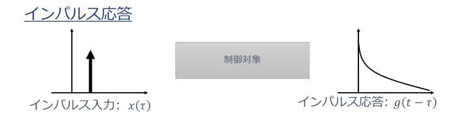

システムの数学モデル
ここではシステムの数学モデルについて説明していきます。システムとは前回も説明しましたが、フィードバック制御系全体のことを指しています。
数学モデルと小難しい言い回しを使っていますが、簡単に言うと入出力関係を数学を使って表す方法です。数学的に表現するためにシステムの前提条件があるので、それをまず紹介します。
システムの前提条件として、線形時不変システムを考えます。これは後程詳しく説明します。通常、制御対象は非線形で、時変なシステムです。しかし、このままでは非常に複雑で、
取り扱うのは困難なため、動作点(operating point)といわれる所の周りで、システムを固定し、制御対象を線形で、時不変なシステムとして取り扱います。
動作点(operatingpoint)
これが動作点です。この周りにシステムをロック(固定)することが、前提条件として必要になります。
それでは、線形時不変なシステムとは何でしょうか。この漢字の通り、線形な関係が時間によらず一定であるということです。
もう少し詳しく見ていきましょう。まず、あるシステムに$x_1(t)$,$x_2(t)$が入力され、それに対する出力を$y_1(t)$,$y_2(t)$とします。
すると、2つの線形条件を満たします。1.入力${x_1(t)+x_2(t)}$に対する出力は${y_1(t)+y_2(t)}$ 2.aを定数とすると、入力$x_1(t)$に対する出力$y_1(t)$は$ax_1(t)$
これを時間とともに変化せず満たすシステムを線形時不変システムといいます。
ここまでで、前提条件が決まりました。それでは、入出力関係を記述していきたいと思います。
2つの方法で記述することができます。1つ目がインパルス応答を用いた方法、2つ目が運動方程式を用いた方法です。
まず1つ目について説明していきます。
インパルス応答
任意の入力をインパルス入力の集まりと考えます。その出力は、インパルス応答とインパルス入力の積になります。
これを様々な時間で積分してやることで、全体の出力を表すことができます。この時、以下のような積分の形になります。
\begin{align}
y(t) = \int_{-\infty}^{\infty} x(\tau)g(t-\tau)d\tau
\end{align}
これを畳み込み積分といいます。つまり、任意の入力に対する出力は畳み込み積分で表すことができるのです。
次に2つ目について説明していきます。
運動方程式
このシステムの入出力関係は以下のようなn回微分方程式で表すことができます。
\begin{equation}
y^{(n)} (t)+a_{n-1} y^{(n-1)} (t)+...+a_1 y^{(1)}(t)+a_0 y(t) = b_m x^{(n)}(t)+b_{m-1} x^{(n-1)} (t)+...+b_1 x^{(1)}(t) (t)+b_0 x(t)
\end{equation}
これは単純に運動方程式を立てて、それを解くことによって入出力関係を求めるというものです。
しかし、時間空間では運動方程式が複雑になり、厳密に解くことができません。そこで、次回はこの2つの方法を周波数空間に移し、考え直していきたいと思います。